Trạng thái có ý nghĩa
Đã duyệtĐang xếpCần duyệt lạiChưa có phương án
Màu đi cùng câu chữ. Số lượng, khối lượng, thể tích luôn dùng chung màu mực.
Hướng B · Mở rộng các màn
Thêm 9 màn desktop, nối tiếp 7 màn vòng trước. Mở một màn rồi dùng ô chọn phía trên để đi qua luồng. Các bản Chi tiết chuyến đã duyệt vẫn ở bên dưới.
MOCK RESULTMàn công việc nền sáng, hướng dẫn xếp/dỡ nền tối và panel kiện phía dưới. Có thể thử kiểm mã, ảnh sự cố và hàng đợi trong phiên. Chưa phải app Flutter.
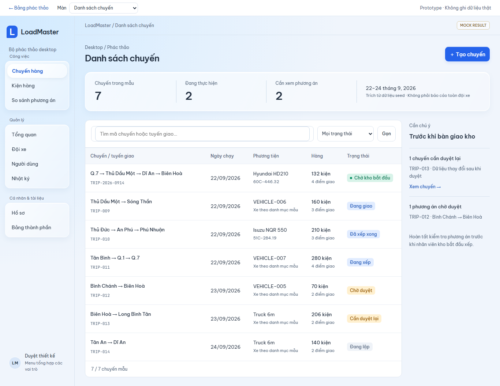
Tìm không dấu, lọc trạng thái, đổi mật độ và xem chuyến cần duyệt lại.
Mở phác thảo →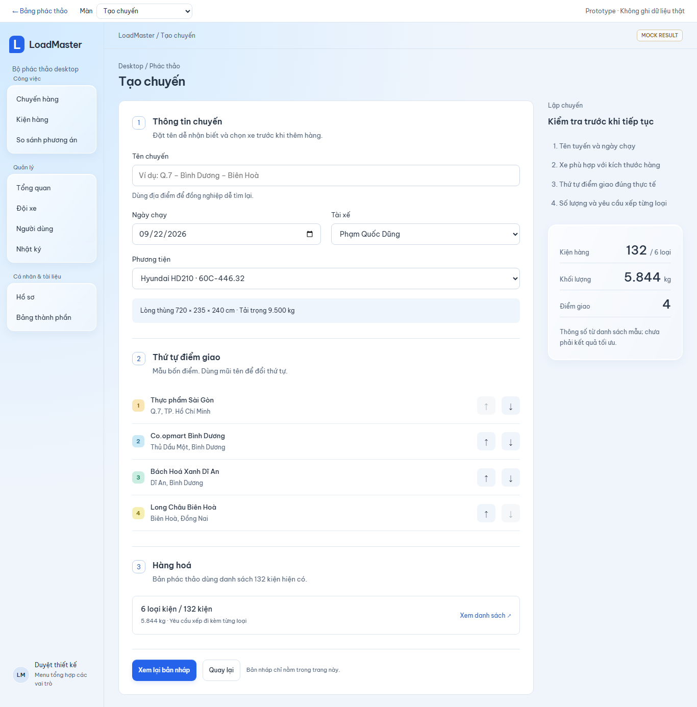
Nhập thông tin, chọn xe, đổi thứ tự điểm giao và kiểm tra bản nháp.
Mở phác thảo →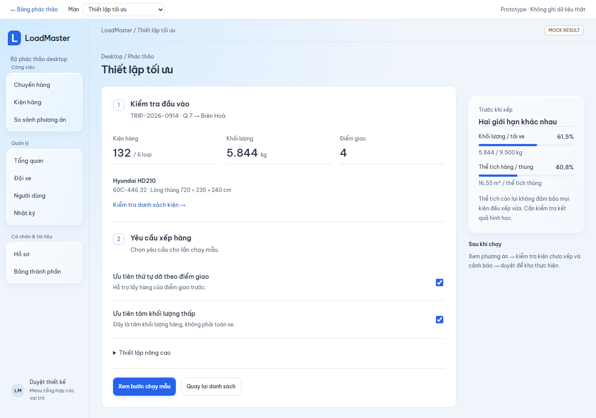
Đầu vào, thứ tự dỡ, tâm khối lượng và thiết lập nâng cao.
Mở phác thảo →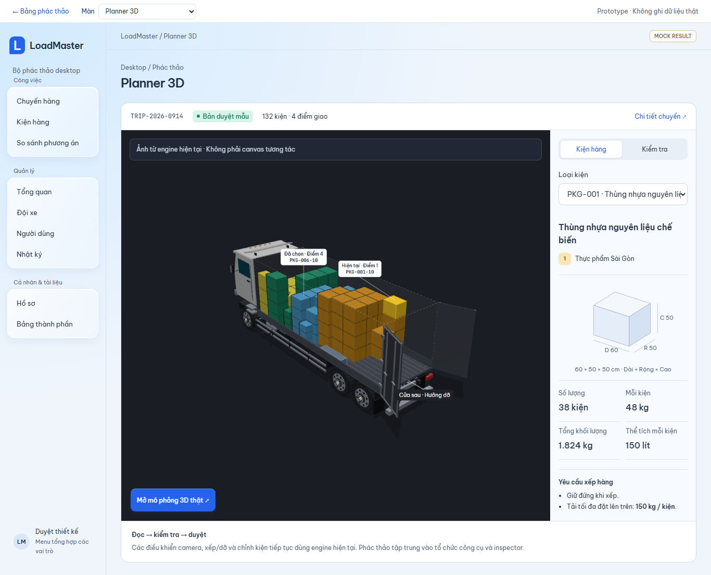
Chọn loại kiện, đọc kích thước và kiểm tra yêu cầu. Canvas là ảnh tham chiếu, có lối mở engine thật.
Mở phác thảo →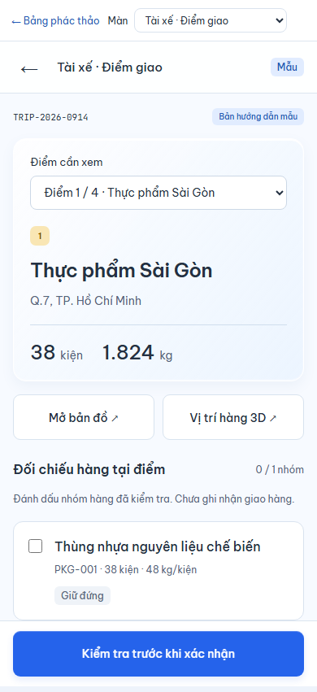
Chọn điểm, kiểm nhóm hàng, mở bản đồ và nhập sự cố kèm tên file ảnh.
Mở phác thảo →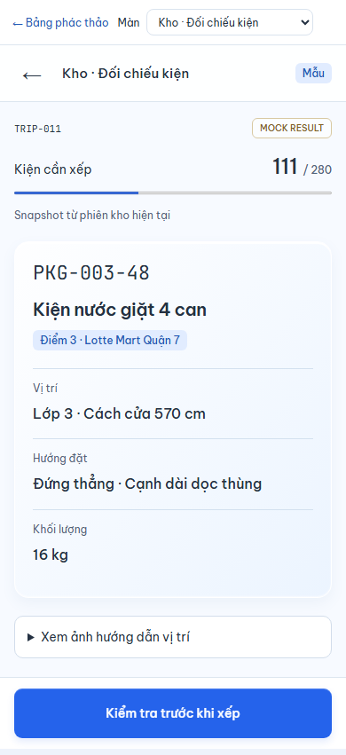
Bước hiện tại, hướng đặt, vị trí và kiểm tra mã bằng bàn phím hoặc máy quét.
Mở phác thảo →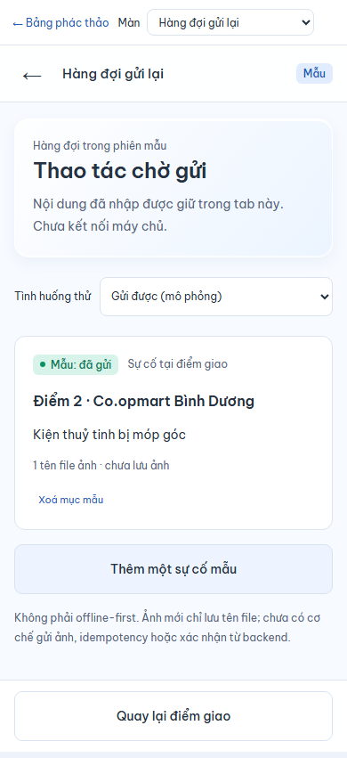
Thử trạng thái chờ, lỗi và gửi được. Chỉ lưu nội dung trong phiên; không gửi máy chủ.
Mở phác thảo →Luồng nhập Excel đầy đủ, thêm/sửa người dùng và bảo dưỡng xe; trạng thái tải/lỗi toàn bộ màn; đăng nhập/403/404; tìm nhanh/thông báo; danh sách chuyến kho/tài xế và hoàn thiện mobile. Bảng thành phần còn cần nghiệm thu tương phản, bàn phím và ánh xạ Flutter.
Tuyến ở trái · bảng ở giữa · phương tiện ở phải. Tổng hợp không tranh chỗ với dữ liệu.
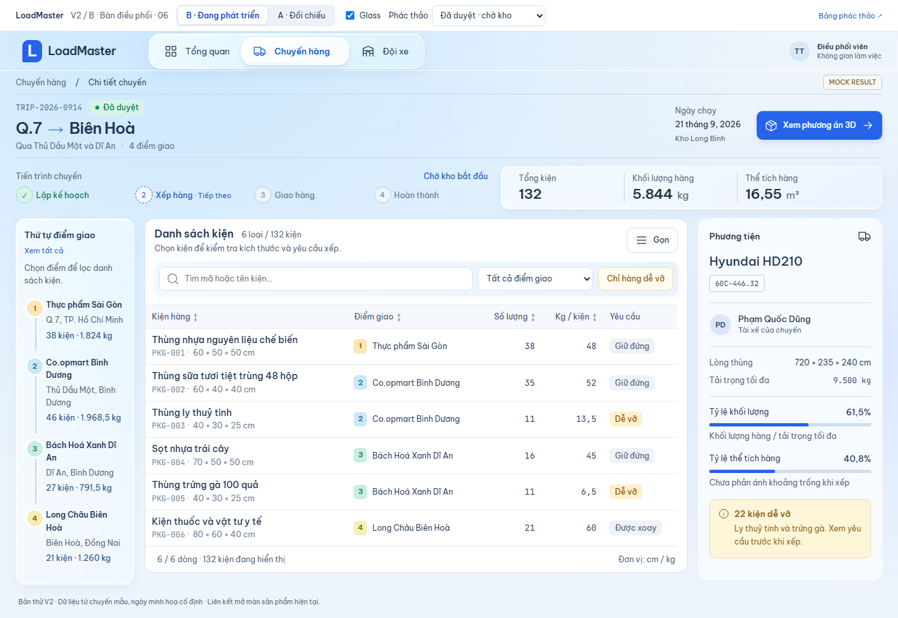
Đóng ngay trên đầu panel. Kích thước và yêu cầu xếp theo dữ liệu; tóm tắt xe vẫn còn.
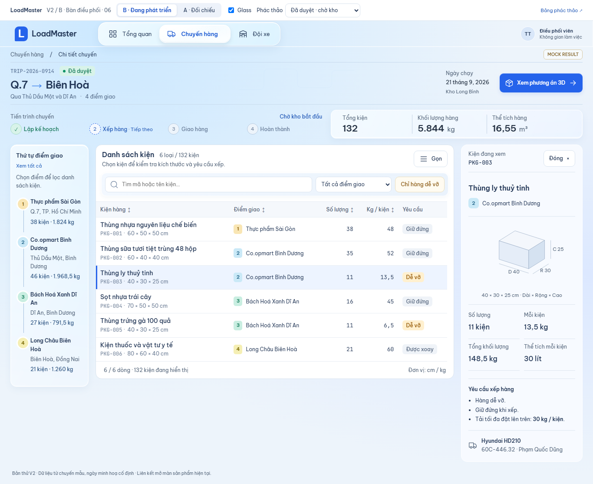
Cảnh báo nói rõ lý do và việc tiếp theo.
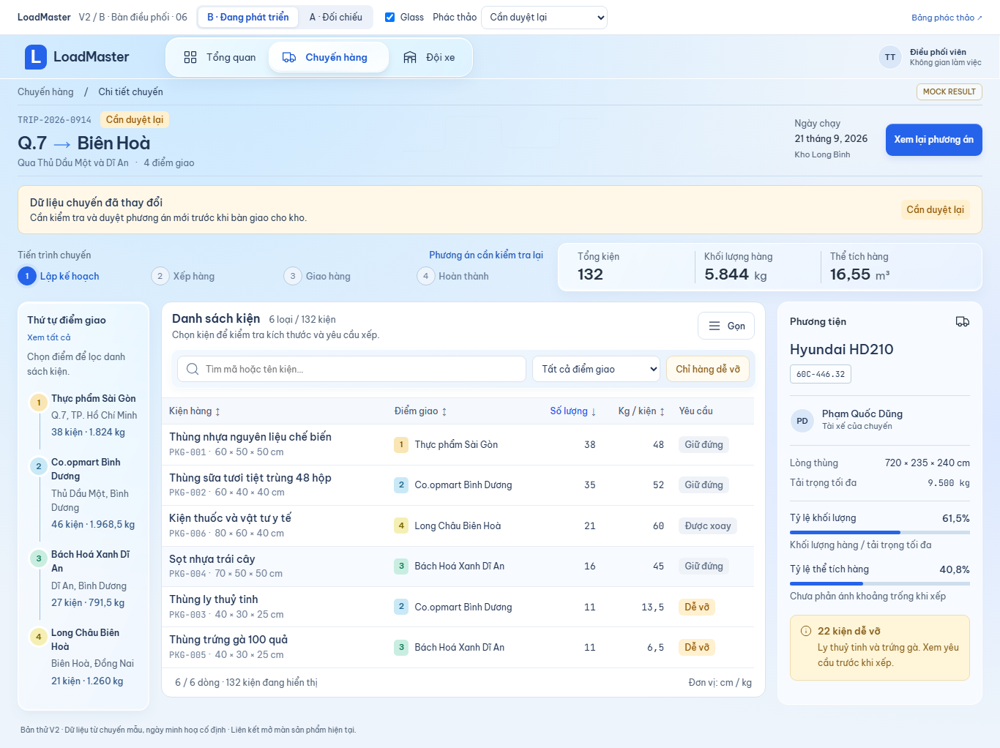
Mở cảnh cần duyệt lại ↗Panel đáy, chữ rõ, đóng bằng nút hoặc Escape. Đây là web responsive, chưa phải app Flutter.
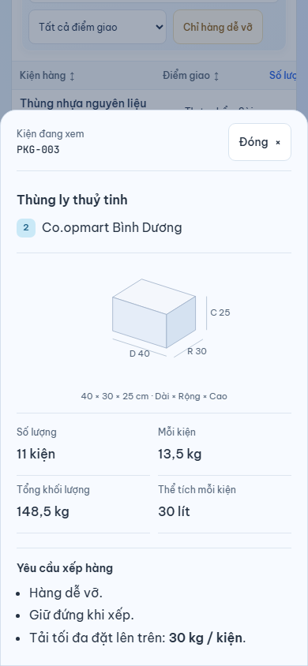
Chọn để xem phác thảo. Không gửi lệnh nghiệp vụ và không ghi dữ liệu.
Khởi đầu cho bảng thành phần V2 — chưa là bộ component production.
Màu đi cùng câu chữ. Số lượng, khối lượng, thể tích luôn dùng chung màu mực.
Phản sáng cùng hướng, chữ tối. Bảng và panel đọc sâu giữ nền rõ.